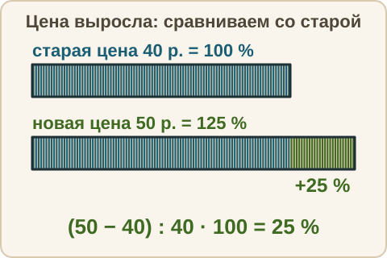
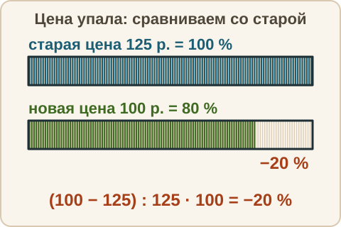
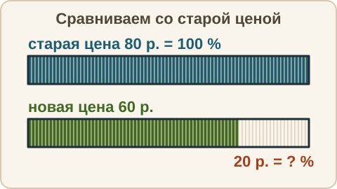

Математика: база · занятие 14Проценты: сколько, на сколько, скидка и наценка
Цель: ты находишь, сколько процентов одно число составляет от другого, считаешь «на сколько процентов больше или меньше» и решаешь задачи на скидку, наценку, повышение и понижение цены. Это задания 1–5 ОГЭ и текстовые задачи. Ответы и подсказки спрятаны: сначала реши сам, потом нажми кнопку.
Как записывать ответ. Число — целое число. Дробь — через черту и сокращённая до конца, например 3/4. Десятичная дробь — с запятой, например 3,25. Проценты записывай просто числом, без знака %; цену — числом рублей.
Вспомнить
Без подсказок, сразу проверка. Отмечай, на чём споткнулся, — в журнал.
- 40 % от 85
- 20 % числа равны 14. Найди число.
- 2,5 + 0,75
- 5/6 − 1/3
- 8 · (−3)
- 9 % от 300
Беглость: сотая часть, продолжение
Игра «сотая часть», продолжение. Ошибся — пример вернётся: попробуй ещё раз. Без таймера. Обрати внимание: процентов может быть больше ста — 200 % это вдвое больше самого числа.
- 200 % от 15
- 50 % от 46
- 10 % от 350
- 1 % от 4500
- 150 % от 20
- 5 % от 60
Теперь «дробь — процент». Объясни вслух, сколько это из 100.
- 1/4 — сколько процентов?
- 1/5 — сколько процентов?
- 3/10 — сколько процентов?
Правило
Сколько процентов одно число составляет от другого. Чтобы узнать, сколько процентов число a составляет от числа b, делим a на b и умножаем на 100: a : b · 100 (%). Здесь a — часть (то, что сравниваем), b — целое (то, с чем сравниваем, то есть 100 %). Результат — проценты.
«На сколько процентов больше или меньше». Сначала находим разницу между числами. Потом узнаём, сколько процентов эта разница составляет от того числа, с которым сравнивают, — от исходного (его считаем 100 %). Формула: (новое − старое) : старое · 100 (%). Здесь «старое» — число, с которым сравниваем (от него считаем 100 %), «новое» — то, которое с ним сравниваем. Если «новое» меньше «старого», получится «на столько-то процентов меньше».


Повышение и понижение на p %. Если число увеличили на p %, оно стало: старое · (1 + p/100). Если уменьшили на p %, стало: старое · (1 − p/100). Скидка — это понижение цены на p %. Наценка — повышение цены на p %. Ответ в рублях получаем сразу, без округлений, если брать удобные числа.
Из жизни. Куртка стоила 2000 рублей, скидка 25 %. 1 % — это 20 рублей, 25 % — это 500 рублей. Новая цена: 1500 рублей.
Разобранный пример
1. Сколько процентов составляет 9 от 36?
- 9 : 36 = 1/4.
- 1/4 · 100 = 25.
- Ответ: 25 %.
2. Цена выросла с 40 до 50 рублей. На сколько процентов?
- Разница: 50 − 40 = 10 (рублей).
- Сравниваем с исходной ценой 40 рублей: 10 : 40 · 100 = 25.
- Ответ: цена выросла на 25 %.
3. Футболка стоила 600 рублей, скидка 15 %. Какая новая цена?
- 1 % от 600 — это 6 рублей. 15 % — это 6 · 15 = 90 рублей (это скидка).
- Новая цена: 600 − 90 = 510 рублей.
- Тот же результат одним действием: 600 · (1 − 15/100) = 600 · 0,85 = 510.
- Ответ: 510 рублей.
С подсказкой
Решай сам. Подсказку открывай, только если застрял.
- Цена упала с 80 до 60 рублей. На сколько процентов?

Сам
Ответ — число (в процентах — число процентов; в рублях — число рублей). Два раза не сошлось — появится кнопка «Показать решение».
- Сколько процентов составляет 12 от 48?
- Было 50, стало 65. На сколько процентов стало больше?
- Было 50, стало 40. На сколько процентов стало меньше?
- Тетрадь стоила 80 рублей. Магазин сделал наценку 15 %. Новая цена в рублях?
- Ботинки стоили 3000 рублей. Скидка 30 %. Новая цена в рублях?
- Цену 500 рублей подняли на 20 %, а потом снизили на 20 %. Какой стала цена в рублях?
Ловушка
Ловушка. Цену 1000 рублей подняли на 10 %, а потом снизили на 10 %. Многие уверены: «на 10 % больше и на 10 % меньше — вернулись к тому, что было». Нет. Второй раз 10 % берут уже от новой цены, а она больше. После повышения: 1000 → 1100. Теперь 10 % от 1100 — это 110, и 1100 − 110 = 990. Не 1000. Значит, ответ «как было» не сошёлся. Проценты от разных чисел складывать и вычитать нельзя: каждый раз смотри, от какого числа процент. Проверь себя: от какого числа я беру процент на этом шаге?
Смесь
Вперемешку: проценты, дроби, десятичные дроби, порядок действий. Это 10 заданий. Результат смотри в строке «Верно: N из 10» под заданиями.
- 25 % от 480
- 30 % числа равны 21. Найди число.
- Сколько процентов составляет 7 от 28?
- 2/3 + 1/6
- 0,3 · 0,4
- Цена 90 рублей, скидка 10 %. Новая цена в рублях?
- Было 20, стало 25. На сколько процентов стало больше?
- −7 − 5
- 5 − 2 · (4 − 6)
- 8,4 : 0,7
Журнал
Запиши 1–3 строки: «что перепутал → как проверить». Пример формы: «считал процент от нового числа → спрашиваю себя: с каким числом сравниваю, от него и беру 100 %». Там же отметь результат смеси из строки «Верно: N из 10».
- …